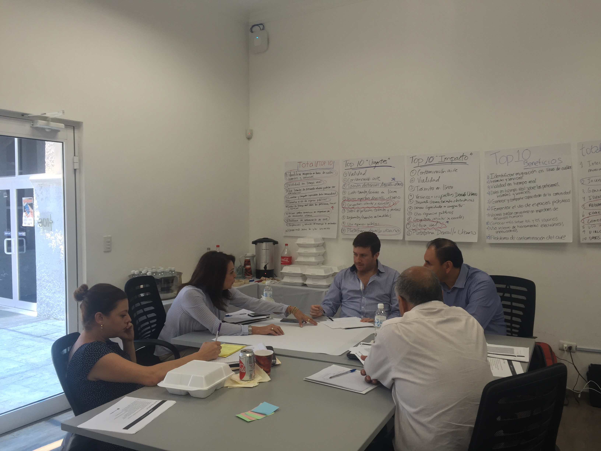
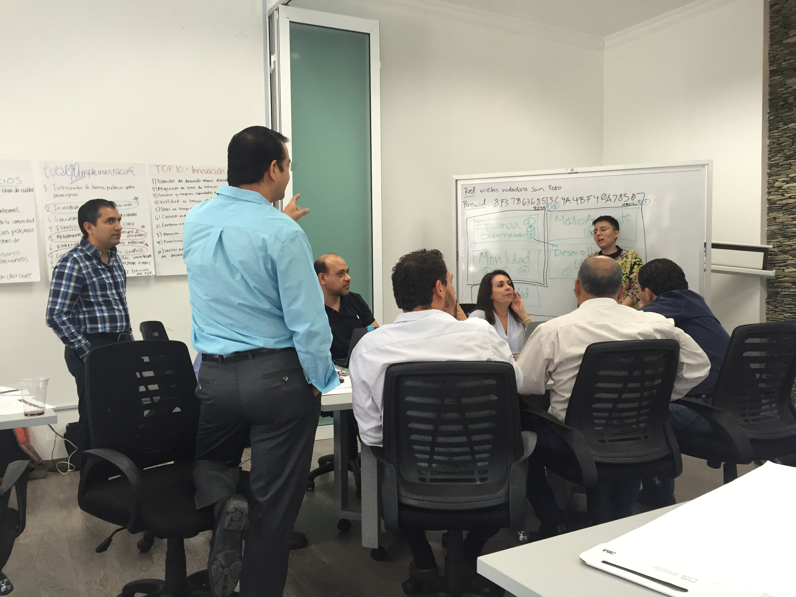
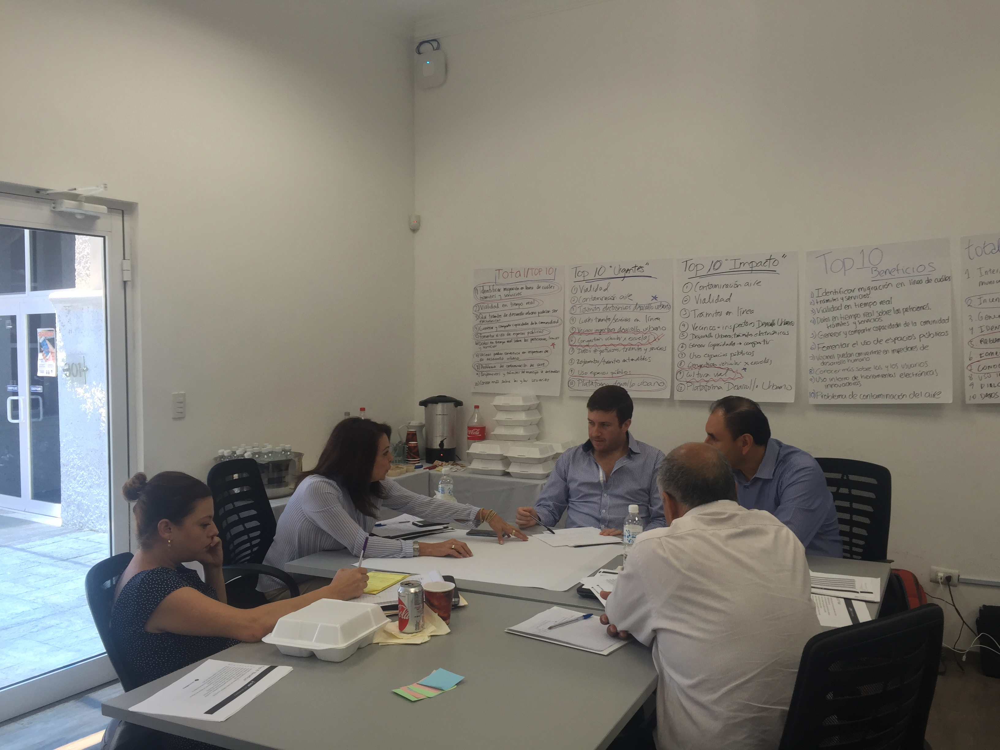
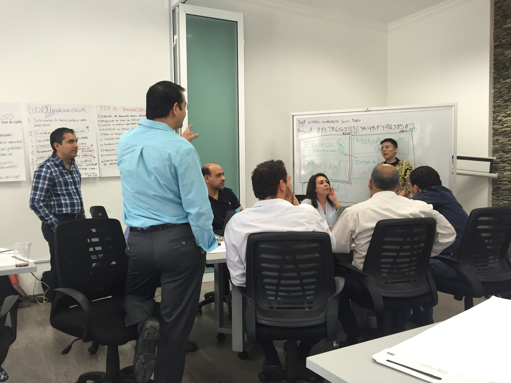

menu
Cities need to solve increasingly complex problems for growing populations with fewer resources. To do more with less, municipal governments need to become more agile in how they identify the knowledge and expertise spread across their community to the end of implementing more effective policies and services.
To that end, public institutions are turning to open innovation--also known as crowdsourcing--to open up the process of identifying both good ideas and the evidence to support their implementation to citizens, civil servants, and organizations.
But despite an increasing number of municipal open innovation success stories, only a few cities use crowds effectively—if at all. Hardly any know how to institutionalize open innovation as standard operating procedure.
San Pedro Garza García is widely recognized as one of the most influential municipalities in Latin America and also the first municipality of Mexico to have two independent councilmembers (i.e., with no political affiliation). It is through the request and efforts of these councilmembers that the initiative of the present project first began. Thanks to a process of socialization on the importance of open government and the potential of open innovation to the municipality officials, they decided to join the councilmembers efforts in pursuing the present project, which ultimately resulted in the full support of the Mayor and his office on launching the San Pedro’s Open Innovation Challenges for Solving Public Problems (DesafíoSP).
The goal of the project is to pilot and evaluate a replicable process for Latin American cities to tap into the skills, talents and abilities of diverse citizens to solve social problems more quickly and effectively. By creating the “conversational infrastructure” -- the method and tools -- to source and, above all, implement novel approaches from civil servants and the public the hope is to spark a potential shift from the traditional top-down, closed governing approaches to more decentralized, collaborative, and open practices of solving public problems that take the intelligence and expertise of the public seriously and encourage active forms of citizenship.
Rather than rely on prize-backed challenges alone, however, the design of the project combines open innovation to source a wide array of ideas with ICT-enabled training to shape those ideas into implementable new policies and services.
Over the course of the year, the GovLab in collaboration with the Mayor’s office of the Municipality of San Pedro Garza García (SPGG), Mexico will:

 



Through these pilot programs, we hope to learn how best to design an effective open innovation effort with the public and with civil servants. We also help to hone the method for turning winning ideas into implementable proposals. In the process, we hope to answer the question whether open innovation (also known as crowdsourcing) can lead to meaningful solutions to public problems and meaningful citizen engagement practices. Success will be measured, not merely by the numbers of people participating, but by the downstream impact of the projects they create.
 This work is licensed under a Creative Commons Attribution-ShareAlike 4.0 International License
This work is licensed under a Creative Commons Attribution-ShareAlike 4.0 International License